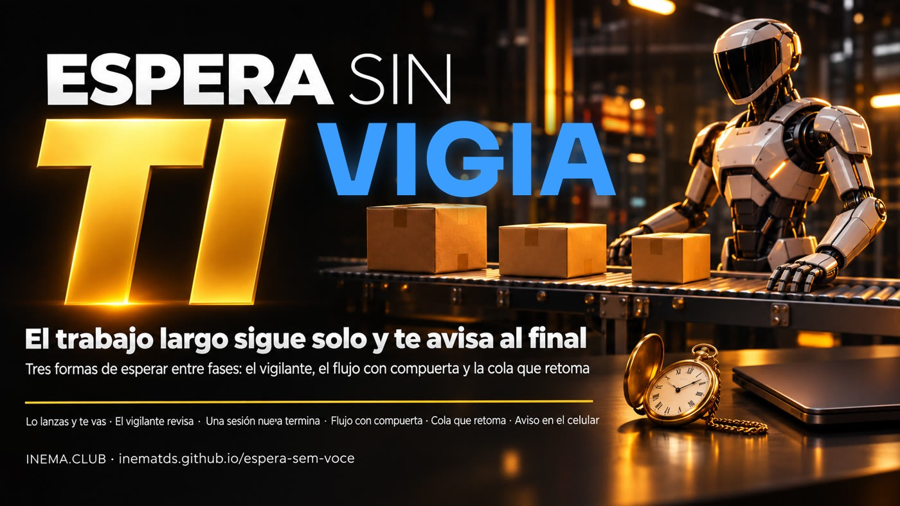
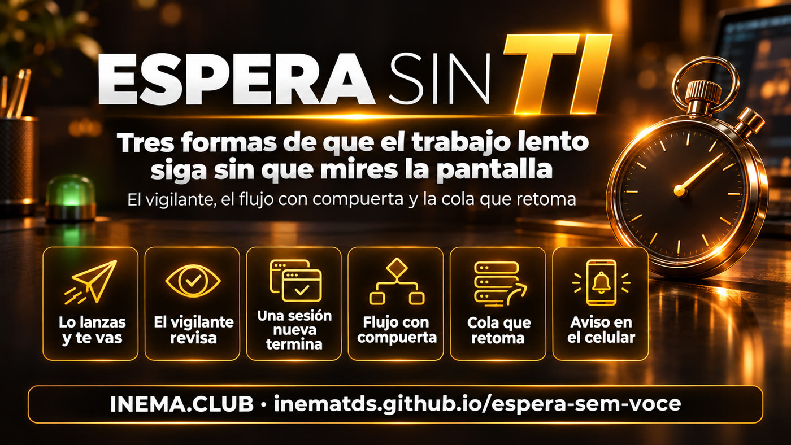
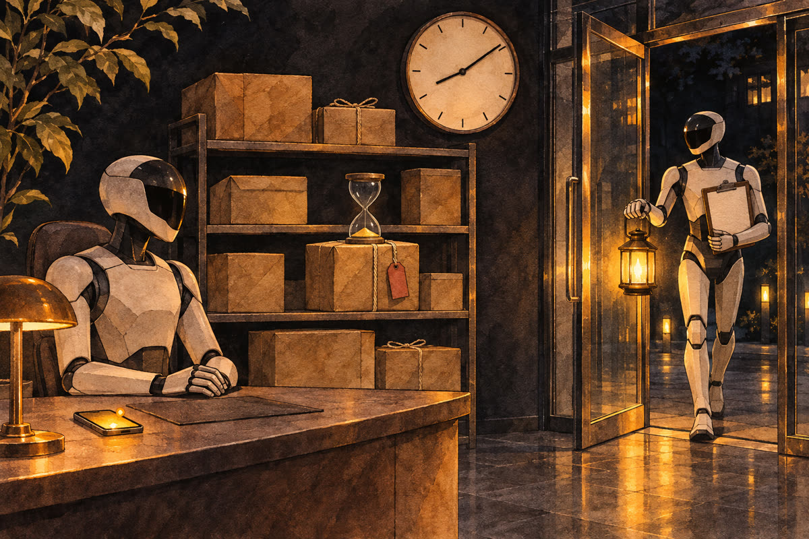

Haces videos con IA
Mandas el avatar o el montaje y te vas. El video se monta y se publica cuando está listo, incluso de madrugada. Si el generador se traba, te enteras en el momento, no al día siguiente.
Usa: el vigía
Deja de quedarte mirando la pantalla mientras el video se termina de hacer. Le pides el trabajo largo a la IA y cierras la conversación. El vigía, un programa sin IA, revisa cada 5 minutos y abre una conversación nueva de la IA para terminar. Al final te llega el aviso al celular: hecho o falló.


En una frase
Quieres pedirle un trabajo largo a la IA, irte a hacer tu vida y recibir solo el aviso de que terminó. Este kit gratuito muestra las tres formas que INEMA usa todos los días para esperar sin nadie mirando la pantalla, y trae una de ellas lista para que la uses:
La computadora donde funciona se queda encendida; quien se va eres tú.
Para quién
Mandas el avatar o el montaje y te vas. El video se monta y se publica cuando está listo, incluso de madrugada. Si el generador se traba, te enteras en el momento, no al día siguiente.
Usa: el vigía

El trabajo se detiene en los puntos costosos, antes de gastar créditos y antes de publicar, y espera tu "puedes seguir" desde el celular. Nada sale sin que veas el texto.
Usa: el flujo con compuerta
Tres diseños probados en producción para elegir el correcto, los plazos de cada uno medidos, y un vigía listo, sin dependencias, para adaptar.
Usa: los tres, y la cola en el día a día

Cómo funciona
Tú solo trabajas en el paso 1. Después cierras la conversación y esperas el aviso.
Acuerdas el trabajo con la IA y apruebas lo que haga falta, como el guion del video.
Pone en marcha la parte larga y escribe la nota: lo que ya se hizo, lo que falta, tus órdenes entre comillas y lo que no puede pasar.
Por quéQuien va a terminar es una conversación nueva, que solo sabe lo que está en la nota.
Cierras la conversación y te vas a hacer tu vida. La computadora se queda encendida, sin suspenderse.
Cada 5 minutos pregunta "¿ya está listo?". Espera hasta 8 horas.
Por quéEl vigía es un programa común, no una IA. Mientras espera, no se gasta nada.
No haces nada. Esta es la parte sin ti.
Cuando está listo, el vigía abre una conversación nueva. Ella lee solo la nota y llega hasta el final (monta, revisa, publica), con hasta 3 horas para eso.
Por quéSin nadie en la pantalla, no se detiene a pedir permiso. Vale lo que está escrito en la nota.
Lee el resultado y manda el aviso al celular: verde si salió bien, rojo con el motivo si falló.
Lees el aviso. Si falló, el motivo viene incluido, y rehacerlo es decisión tuya.
Por quéEl peligro de irte es el silencio. Aquí todo final tiene aviso.
Las 3 formas
INEMA espera los trabajos largos de tres formas, cada una buena para un caso. El kit explica las tres, con los plazos medidos, y entrega el vigía listo.
Forma 1
Para un trabajo que empezaste conversando con la IA.
Un pequeño programa aparte, sin IA, revisa si quedó listo y llama a una IA nueva que lee la nota y termina. Tus órdenes van en la nota, antes de irte.
Como en la vida diaria: dejas el auto en el taller con una nota ("cambiar el aceite, no tocar la radio") y te vas. El portero mira de vez en cuando si llegó la pieza; cuando llega, llama al mecánico, que lee la nota y hace el servicio. Tú solo recibes el mensaje "auto listo".
Viene del vigía interno de INEMA. La copia reducida está en la carpeta vigia de este kit.
Forma 2
Para producción que se repite (video, reel) con aprobación a la mitad.
Mandas un comando por Telegram y el trabajo avanza por fases: guion, avatar, descargar, montar. En los puntos costosos hay una compuerta: el flujo se detiene hasta tu "puedes seguir". Si el equipo se reinicia, vuelve a la fase en la que estaba.
Como en la vida diaria: una imprenta que solo imprime después de que apruebas la prueba de color. La pieza pasa de mesa en mesa; en la mesa de aprobación, espera tu firma. Si se va la luz, cada mesa sabe lo que ya hizo.
Viene de inemaccbot, el bot de producción de INEMA (código abierto).
Forma 3
Para pedidos del día a día, que necesitan sobrevivir a un reinicio.
Cada pedido se convierte en una tarea guardada en una cola: reiniciar no la borra. Si el equipo se cae a la mitad, llega un aviso, y retomas enviando en el chat el número del pedido con "continúa donde quedaste" (el comando /job): sigue con la conversación guardada.
Como en la vida diaria: el turno del banco. Sacas tu número y te sientas; aunque el sistema se reinicie, tu número sigue en la fila. Si la atención se corta a la mitad, el banco te llama para avisarte, y vuelves con el mismo número de trámite, sin contar todo de nuevo.
Viene de openpcbotv3, el asistente de INEMA en Telegram (código abierto). Allí llegan los avisos de los otros dos.
| Vigía | Flujo con compuerta | Cola que retoma | |
|---|---|---|---|
| Quién espera | un pequeño programa aparte, sin IA | el propio bot, fase por fase | el propio asistente, tarea por tarea |
| ¿Apruebas a la mitad? | no: las órdenes van en la nota | sí, en la compuerta | no; puedes retomar después |
| Cuándo se rinde | 8 h sin quedar listo | cada fase tiene su límite (1 h a 40 h) | si se cae a la mitad: avisa y te espera |
| Cómo te avisa | en el celular, hecho o falló | en el chat del bot | en el chat del asistente |
Cuestiones importantes
La mitad de los trabajos tarda más de 92 minutos, y tú no estás mirando. El peligro es el silencio: no llega nada y crees que todavía está esperando. Son dos casos, cada uno con su respuesta.

Cada trabajo tiene un límite (8 h, tú lo ajustas). Si lo pasa, el vigía se rinde y manda el aviso rojo con el motivo. Si el trabajo lleva un registro y este deja de avanzar durante 20 minutos, sin nada más funcionando en la carpeta, el aviso llega antes del límite.
De los 179 trabajos medidos, 5 se detuvieron en el límite, y el aviso llegó en cada uno.
Aquí el vigía no puede avisar, porque quien avisa es él. Por eso existe la inspección: otro pequeño programa sin IA, con reloj propio. Cada hora comprueba si el vigía funcionó en los últimos 15 minutos, si algún trabajo pasó el límite sin aviso y si alguna IA nueva murió sin cerrar. Solo habla si encuentra un problema.
Todos los días a las 08:00 llega un informe corto. Si no llega, el equipo se cayó: la falta del informe también es un aviso.
Como en la vida diaria: el portero llama cuando se vence el plazo del paquete. Pero si el portero se duerme, nadie llama. Entonces el administrador pasa cada hora con la linterna, y por la mañana deja una nota con el resumen de la noche.
Cierras la conversación y la IA olvida todo. Sin un archivo de traspaso, puede rehacer lo que ya estaba listo u olvidar lo que pediste. Por eso, antes de que te vayas, escribe la nota.

Se queda en la carpeta del trabajo. Quien la lee es una IA nueva, que no sabe nada más que lo que dice. Tiene cuatro partes:
Para cuando tú vuelves a la conversación otro día, o cambias de IA (Claude ↔ Codex).
Cómo pedirlo: antes de limpiar, dile a la IA "handoff" (traspaso de sesión). Al volver, en una conversación nueva, di "retoma".
Antes de instalar
En la práctica
Abre Claude Code o Codex en la carpeta de tu proyecto. Son IA que modifican archivos y ejecutan programas en tu computadora, siempre pidiendo permiso.
Pega el pedido. La IA lee el kit, pregunta cuáles de tus trabajos tardan y dice cuál de las tres formas sirve para cada uno.
Di que sí solo a lo que tenga sentido. Después lanza un trabajo de verdad, cierra la conversación y espera el aviso.
Lee el repositorio https://github.com/inematds/espera-sem-voce (el README y la carpeta vigia). Después mira mi proyecto y pregúntame qué trabajos tardan (video, render, transcripción, generador externo) y cómo los espero hoy. Dime, en lenguaje sencillo, cuál de las tres formas sirve para cada uno (vigía, flujo con compuerta o cola que retoma), cuánto tiempo dejaría de pasar con la conversación abierta y qué haría falta para que el vigía sepa preguntar "¿ya está listo?". No instales ni cambies nada antes de mi sí. Con mi sí: copia el vigía de ejemplo, ejecuta su prueba, arma la primera nota y la primera comprobación para un trabajo mío, conecta el aviso a mi celular por Telegram y dime si esta computadora puede suspenderse o apagarse mientras espera.
Los flujos animados de arriba son la explicación completa: mira cada uno hasta el final. No hay versión en línea para usar, porque el vigía funciona en tu computadora.
No hay instalador: es una carpeta con un programa pequeño (en Python, que tu IA instala si falta). Descarga el ZIP del kit o mira el repositorio.
Cómo funciona el vigía, la prueba, los plazos exactos y dónde está cada pieza en los proyectos de origen se encuentra en el README.
Medido
La inspección, activada el 25/11/2026, contó en el primer informe 286 rondas del vigía en 24 horas, con un intervalo máximo de 6 minutos y ningún trabajo perdido. La cola del asistente completó cerca de 150 mil tareas; 13 fallaron, y cada falla generó un aviso. Conteos tomados de las bases de datos de cada sistema el 25/11/2026.
Preguntas
No. Pegas el pedido y tu IA arma el vigía para tus trabajos. Tú solo dices que sí.
El kit es gratis y abierto. La espera no gasta nada. La parte final usa tu IA (la suscripción de Claude o de Codex), como cualquier otro trabajo suyo.
Sí. El equipo donde funciona el vigía se queda encendido y sin suspenderse; lo que cierras es la conversación.
Trabajo que empiezas conversando con la IA: el vigía. Producción que se repite con aprobación: el flujo con compuerta. Pedido del día a día: la cola. El pedido de arriba hace que la IA elija contigo.
Sí. El vigía llama al comando que elijas para la parte final; el ejemplo usa Claude Code, y se puede cambiar por Codex.
Ven a contarlo y a ver otros kits gratis en inema.club, directo en internet.